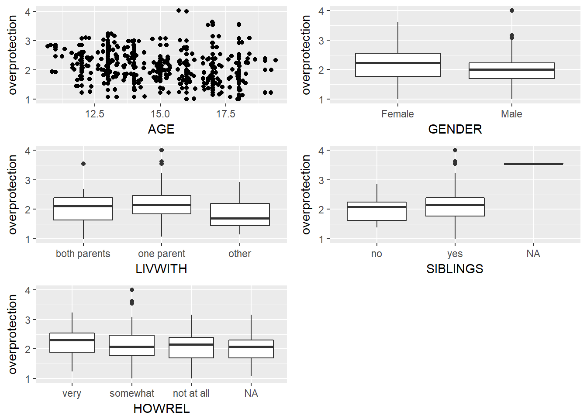
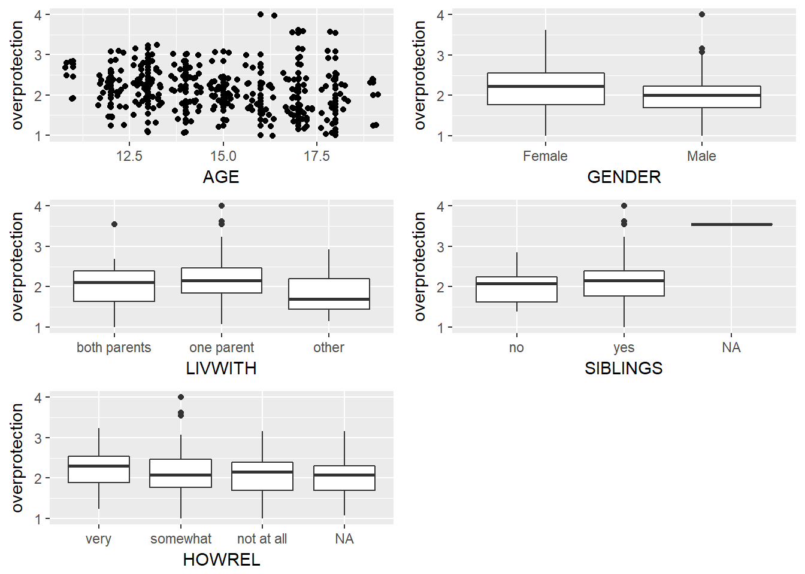

Confirmatory Factor Analysis
Mitch Borgert
Since our goal was to see how the variables related, I first looked at how a computer would group the variables.
Data Exploration for factor analysis

The corrplot has some very small groupings of variables when it is forced to do 9. This may leave us with some lackluster factors that do no fit what is predicted. The scree plot tells us that we could take 2 factors if we followed the elbow rule or about 12 factors if we choose to go for an eigenvalue less than 1. We will still try 9 since that is what is predicted.
Factors and their loadings
##
## Loadings:
## RC3 RC5 RC2 RC8 RC1 RC4 RC7 RC6 RC9
## BSI01 0.451
## BSI02 0.550
## BSI03
## BSI04 0.479
## BSI05 0.450
## BSI06 0.614
## BSI07 0.643
## BSI08 0.667
## BSI09 0.656
## BSI10 0.490
## BSI11 0.624
## BSI12 0.547
## BSI13 0.679
## BSI14 0.729
## BSI15 0.470 0.493
## BSI16 0.797
## BSI17 0.797
## BSI18
## BSI19 0.448
## BSI20
## BSI21 0.635
## BSI22 0.565
## BSI23 0.560 0.537
## BSI24 0.685
## BSI25 0.406
## BSI26
## BSI27 0.480
## BSI28 0.698
## BSI29 0.685
## BSI30 0.586
## BSI31 0.555
## BSI32 0.460
## BSI33 0.429
## BSI34 0.475
## BSI35
## BSI36
## BSI37 0.544
## BSI38 0.490
## BSI39
## BSI40 0.572
## BSI41 0.522
## BSI42 0.658
## BSI43 0.436
## BSI44 0.654
## BSI45 0.567
## BSI46 0.604
## BSI47
## BSI48
## BSI49 0.528
## BSI50
## BSI51 0.500
## BSI52
## BSI53
##
## RC3 RC5 RC2 RC8 RC1 RC4 RC7 RC6 RC9
## SS loadings 4.809 4.653 4.251 3.669 3.628 3.200 3.066 2.276 1.507
## Proportion Var 0.091 0.088 0.080 0.069 0.068 0.060 0.058 0.043 0.028
## Cumulative Var 0.091 0.179 0.259 0.328 0.396 0.457 0.515 0.558 0.586Factor 1 (RC1): BSI03,04,05,09,12,15,22,50,53. BSI Obsessive compulsive subscale
Factor 2 (RC4): BSI07,25,35,37,38,46,47,48,49,52,53. BSI Anxiety subscale
Factor 3 (RC9): BSI20,21,24,41,42,43,51. BSI Interpersonal sensitivity subscale
Factor 4 (RC5): BSI14,15,16,17,32. BSI Depression subscale
Factor 5 (RC2): BSI04,06,10,13,40,41,46. BSI Hostility subscale
Factor 6 (RC3): BSI01,02,07,23,29,30. Somatization subscale
Factor 7 (RC7): BSI08,44,45. BSI Psychoticism subscale
Factor 8 (RC6): BSI10,11,25,28 BSI Phobic anxiety subscale
Factor 9 (RC8): BSI33,34. BSI Paranoid ideation subscale
All of the factors match with at least one variable in the actual subscales except factor 9 which I am calling BSI Paranoid ideation even though it shares no factors. Factors 7 and 9 both share have a variable in Psychoticism but I chose Factor 7 simply because it came first. It turns out that things are not working as predicted. Now we will work on a model to predict the overprotection subscale.
Data exploration for model building

From some bivariate graphs of demographic variables vs overprotection we can see that there may be a relationship between age and overprotection. Females may have a higher overprotection than males. Living situation may be something that effects overprotection. Both having siblings and religiousness do not seem very significant.

For the neighborhood variables it looks like drug addicts in the neighborhood and youth gang fights may effect overprotection. Violence and drug dealing to not seem significant.
Model building
For this first model I will just use the BSI variables that maximize R^2 and some demographic variables.
First we will see what automatic variable selection thinks. Then I will try out some models and end up with model 1.
## (Intercept) BSI_obsessive
## TRUE FALSE
## BSI_anxiety BSI_interpersonal_sensitivity
## FALSE FALSE
## BSI_depression BSI_hostility
## TRUE TRUE
## BSI_somatization BSI_psychoticism
## TRUE FALSE
## BSI_phobic_anxiety BSI_paranoid_ideation
## FALSE FALSE| Estimate | Std. Error | t value | |
|---|---|---|---|
| (Intercept) | 2.791 | 0.2522 | 11.07 |
| AGE | -0.04386 | 0.01659 | -2.644 |
| LIVWITHone parent | 0.1405 | 0.08397 | 1.673 |
| LIVWITHother | -0.1642 | 0.133 | -1.234 |
| GENDERMale | -0.2211 | 0.06443 | -3.432 |
| BSI_interpersonal_sensitivity | 0.01263 | 0.03198 | 0.3949 |
| BSI_hostility | 0.05103 | 0.03279 | 1.556 |
| BSI_paranoid_ideation | -0.0009373 | 0.03187 | -0.02941 |
| Pr(>|t|) | |
|---|---|
| (Intercept) | 2.981e-23 |
| AGE | 0.00874 |
| LIVWITHone parent | 0.09567 |
| LIVWITHother | 0.2185 |
| GENDERMale | 0.0007065 |
| BSI_interpersonal_sensitivity | 0.6933 |
| BSI_hostility | 0.1209 |
| BSI_paranoid_ideation | 0.9766 |
| Observations | Residual Std. Error | \(R^2\) | Adjusted \(R^2\) |
|---|---|---|---|
| 247 | 0.4927 | 0.1371 | 0.1119 |
## [1] 361.1086For the second model I will try forward selection starting with age and then add neighborhood and bsi variables.
Similarialy I made a second model.
| Estimate | Std. Error | t value | Pr(>|t|) | |
|---|---|---|---|---|
| (Intercept) | 2.798 | 0.2464 | 11.36 | 3.768e-24 |
| AGE | -0.05254 | 0.01669 | -3.148 | 0.001855 |
| BSI_hostility | 0.06349 | 0.03333 | 1.905 | 0.05796 |
| BSI_somatization | 0.04944 | 0.03413 | 1.448 | 0.1488 |
| NGHB2somewhat | 0.205 | 0.1258 | 1.629 | 0.1046 |
| NGHB2quite | 0.3332 | 0.1481 | 2.249 | 0.02542 |
| NGHB2very | 0.4447 | 0.1354 | 3.283 | 0.001182 |
| NGHB8somewhat | -0.06436 | 0.1245 | -0.5168 | 0.6058 |
| NGHB8quite | -0.2795 | 0.1486 | -1.881 | 0.06117 |
| NGHB8very | -0.2952 | 0.1335 | -2.211 | 0.02797 |
| Observations | Residual Std. Error | \(R^2\) | Adjusted \(R^2\) |
|---|---|---|---|
| 247 | 0.5027 | 0.109 | 0.07519 |
## [1] 373.0254Model 1 has a adjusted R^2 of .111 and a AIC of 361.1. Model 2 has an adjusted R^2 of .075 and an AIC of 373.02. Model 1 is a better model. For the final model we will add the effective variables in model 2 to model 1.
| Estimate | Std. Error | t value | Pr(>|t|) | |
|---|---|---|---|---|
| (Intercept) | 2.627 | 0.2582 | 10.17 | 2.343e-20 |
| AGE | -0.04157 | 0.01713 | -2.427 | 0.01599 |
| LIVWITHone parent | 0.1448 | 0.08313 | 1.742 | 0.08274 |
| LIVWITHother | -0.196 | 0.1339 | -1.464 | 0.1446 |
| GENDERMale | -0.1869 | 0.06516 | -2.869 | 0.004498 |
| BSI_hostility | 0.05259 | 0.03255 | 1.616 | 0.1075 |
| BSI_paranoid_ideation | -0.01988 | 0.0322 | -0.6174 | 0.5376 |
| BSI_somatization | 0.03246 | 0.03353 | 0.9682 | 0.334 |
| NGHB2somewhat | 0.1937 | 0.1224 | 1.583 | 0.1147 |
| NGHB2quite | 0.2918 | 0.147 | 1.986 | 0.04824 |
| NGHB2very | 0.3978 | 0.1351 | 2.944 | 0.003573 |
| NGHB8somewhat | 0.0157 | 0.1225 | 0.1282 | 0.8981 |
| NGHB8quite | -0.2149 | 0.1451 | -1.481 | 0.1399 |
| NGHB8very | -0.2409 | 0.1318 | -1.828 | 0.0689 |
| Observations | Residual Std. Error | \(R^2\) | Adjusted \(R^2\) |
|---|---|---|---|
| 247 | 0.4864 | 0.18 | 0.1343 |
## [1] 360.5092This model has an adjusted R^2 of .134 and an AIC of 360.509, making it the best model. The residuals of this model are mostly normal. For our coefficients we have -.04(age) which is a -.04 decrease in overprotection as age decreases. There is .144 increasing for living with one parent when compared to two parents and -.19 for other. There is -.1869 decrease in overprotection for males when compared to females. For BSI-hostility there is a .05 increase for each increase in the score. There is a -.01 decrease and a .032 increase for BSI_paranoid_ideation and BSI somatization respectively. For NGHB2, drug addicts in a neighborhood, we have .19 increase if it is somewhat a problem, .291 if it is quite a problem, and .397 if it is very much a problem. Finally for NGHB8, drug dealing, we have a .015 increase if it is somewhat a problem, -.214 decrease if it is quite a problem, and -.24 decrease if it is very much a problem.